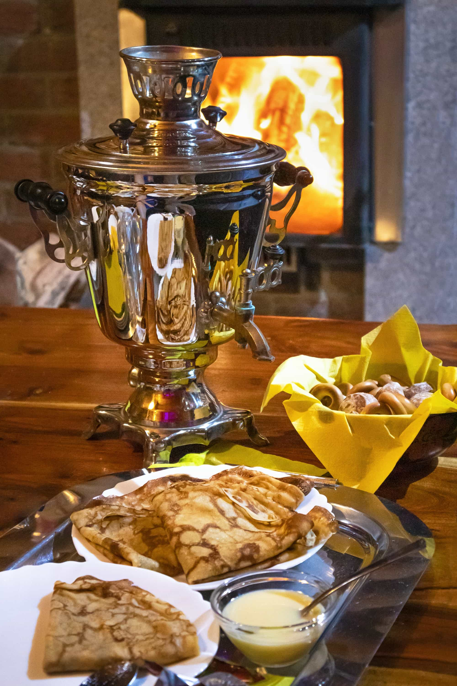

Blini
Widely popular Russian dish, especially eaten during the Maslenitsa festival in Russia. All kinds of fillings are possible--sweet or savory.
What you need:
| Amount | Ingredients |
|---|---|
| 4 1/4 cups | milk |
| 5 | eggs |
| 1/3 teaspoon | salt |
| 2 tablespoons | white sugar |
| 1/2 teaspoon | baking soda |
| 1/8 teaspoon | citric acid powder |
| 4 cups | flour |
| 3 tablespoons | vegetable oil |
| 1 cup | boiling water |
| 2/3 cup | butter |
How to prepare:
- Beat together the milk and the eggs. Stir in the salt and the sugar and mix well. Add the baking soda and citric acid.
- Blend in the flour. Add the vegetable oil and pour in the boiling water, stirring constantly. The batter should be very thin, almost watery. Set the bowl aside and let it rest for 20 minutes.
- Melt a tablespoon of butter in a small frying pan over medium-high heat. Pick the pan up off the heat. Pour in a ladleful of batter while you rotate your wrist, tilting the pan so the batter makes a circle and coats the bottom. The blini should be very thin.
- Return the pan to the heat. Cook the blini for 90 seconds. Carefully lift up an edge of the blini to see if it's fully cooked: the edges will be golden and it should have brown spots on the surface. Flip the blini over and cook the other side for 1 minute.
- Transfer the blini to a plate lined with a clean kitchen towel. Continue cooking the blini, adding an additional tablespoon of butter to the pan after each 4 blini. Stack them on top of each other and cover with the kitchen towel to keep warm.
- Spread your favorite filling in the center of the blini, and fold three times to make a triangle shape. You can also fold up all 4 sides, like a small burrito.